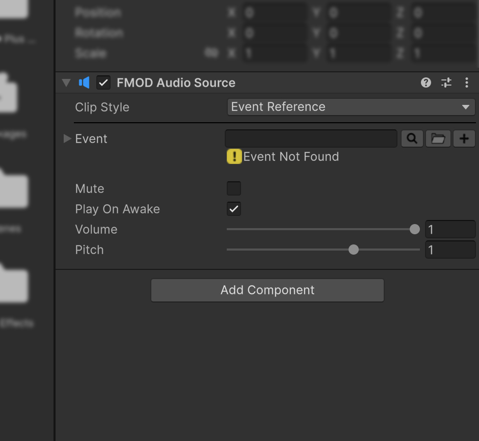
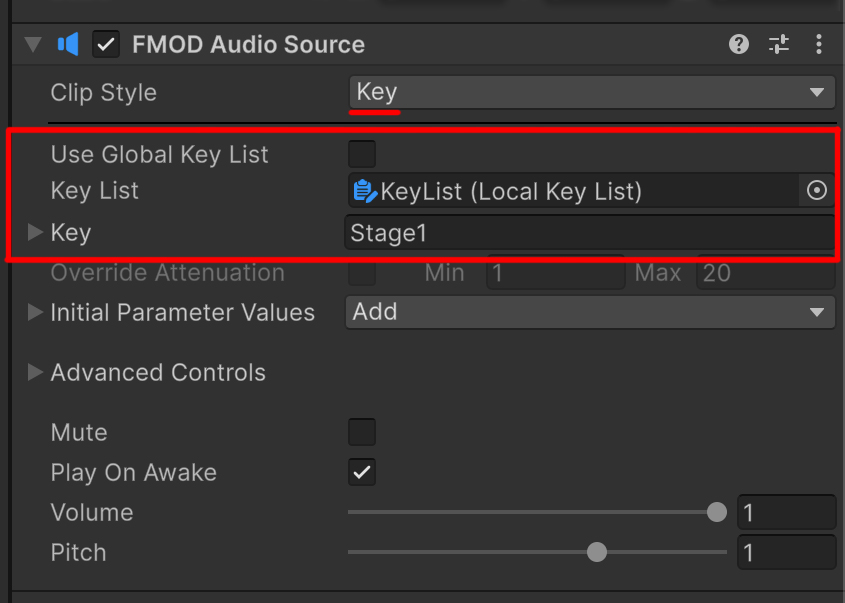
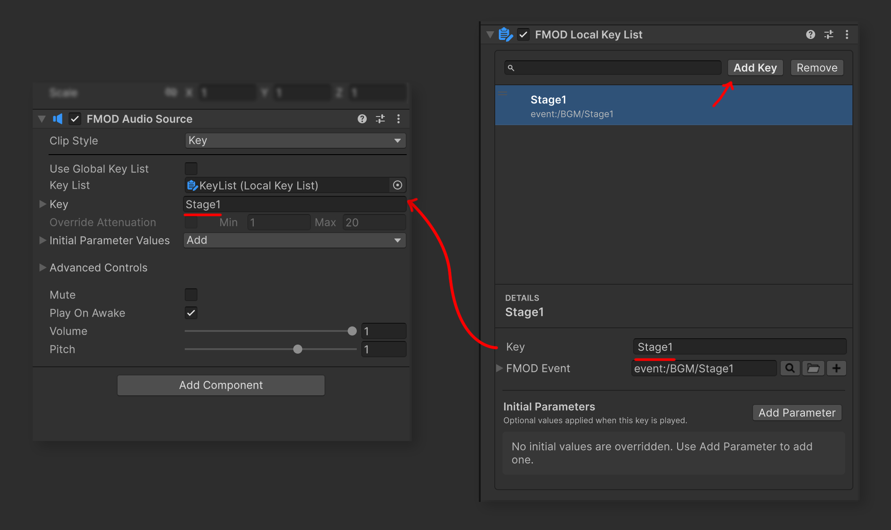

FMOD Audio Source
FMODAudioSource는 Unity의 AudioSource처럼 GameObject에 추가하여 FMOD Event를 재생하는 컴포넌트입니다. 배경 음악처럼 계속 제어해야 하는 소리부터 Parameter가 있는 효과음과 3D 사운드까지 같은 방식으로 다룰 수 있습니다.
이 페이지에서는 Event를 선택하고 소리를 재생하는 기본 과정부터 런타임 제어 방법까지 차례대로 설명합니다.
컴포넌트 추가하기
다음 중 한 가지 방법으로 FMODAudioSource를 추가합니다.
- GameObject > Audio > FMOD > Audio Source를 선택하여 새 Audio Source GameObject를 만듭니다.
- 기존 GameObject의 Add Component에서 FMOD Studio > FMOD Plus > FMOD Audio Source를 선택합니다.

소리를 들으려면 Scene에 FMOD Studio Listener가 있어야 합니다. 일반적으로 Main Camera에 Listener를 추가합니다.
재생할 Event 선택하기
Inspector의 Clip Style에서 Event를 지정하는 방법을 선택합니다.

Event를 직접 선택하기
특정 GameObject가 항상 하나의 Event를 재생한다면 다음과 같이 설정합니다.
- Clip Style을 Event Reference로 설정합니다.
- Event 필드에서 FMOD Event를 선택합니다.

Key List에서 선택하기
여러 Audio Source에서 같은 이름으로 Event를 공유하거나 Event와 초기 Parameter를 함께 관리하려면 Clip Style을 Key로 설정합니다.

- Global Key를 사용하려면 Use Global Key List를 켜고 AMB, BGM, SFX 중 하나를 선택합니다.
- Scene 또는 Prefab의 Key List를 사용하려면 Use Global Key List를 끄고
LocalKeyList를 Key List에 연결합니다. - Key에서 재생할 항목을 선택합니다.

Clip Style을 변경하면 이전 선택이 초기화되므로 Event 또는 Key를 다시 지정해야 합니다. Key를 만드는 방법은 Global 및 Local Key List를 참고하세요.
소리 재생하기
활성화될 때 자동으로 재생하기
GameObject가 활성화되는 즉시 재생하려면 다음과 같이 설정합니다.
- Event 또는 Key를 선택합니다.
- Play On Awake를 켭니다.
- Play Mode로 진입합니다.

GameObject나 컴포넌트를 비활성화했다가 다시 활성화하면 재생을 다시 요청합니다. 비활성화할 때는 Allow Fadeout When Stopping 설정에 따라 소리가 정지합니다.
코드 또는 UnityEvent로 재생하기
버튼, Timeline, 게임 상태 같은 특정 시점에 재생하려면 Play On Awake를 끄고 Play()를 호출합니다.
using FMODPlus;
using UnityEngine;
public class MusicController : MonoBehaviour
{
[SerializeField] private FMODAudioSource audioSource;
public void PlayMusic()
{
audioSource.Play();
}
}
UnityEvent에서는 대상 GameObject의 FMODAudioSource.Play()를 선택하면 별도의 코드 없이 같은 동작을 연결할 수 있습니다.
Event가 지정되지 않았다면 Play()를 호출해도 재생되지 않습니다.
재생 제어하기
정지 방법 선택하기
Inspector의 Advanced Controls에서 Allow Fadeout When Stopping을 설정한 뒤 Stop()을 호출하면 해당 설정이 사용됩니다.
public void StopMusic()
{
audioSource.Stop();
}
호출할 때마다 정지 방식을 정해야 한다면 Stop(bool)을 사용합니다.
// FMOD Studio에서 작성한 Fadeout을 사용합니다.
audioSource.Stop(true);
// 소리를 즉시 정지합니다.
audioSource.Stop(false);
Stop(true)의 실제 Fade 곡선과 시간은 FMOD Studio Event에 작성되어 있어야 합니다. Event에 Fadeout이나 AHDSR Release가 없다면 즉시 정지와 비슷하게 들릴 수 있습니다.
일시 정지하고 다시 재생하기
현재 재생 위치를 유지한 채 멈추려면 Pause()를, 이어서 재생하려면 UnPause()를 호출합니다.
public void PauseMusic()
{
audioSource.Pause();
}
public void ResumeMusic()
{
audioSource.UnPause();
}
Mute 사용하기
Inspector의 Mute를 켜거나 mute를 true로 설정하면 현재 소리가 일시 정지됩니다. 다시 재생하려면 Mute를 끄거나 false로 설정합니다.
audioSource.mute = true;
audioSource.mute = false;
Volume과 Pitch 조절하기
Inspector 또는 코드에서 현재 소리의 크기와 재생 속도를 조절할 수 있습니다.
audioSource.Volume = 0.5f;
audioSource.Pitch = 1.2f;
Volume은0부터1사이로 제한됩니다.Pitch는-3부터3사이로 제한됩니다.- 재생 전에 값을 설정하면 다음 재생부터 해당 값이 사용됩니다.
런타임에서 Event 바꾸기
게임 진행에 따라 음악이나 효과음을 바꾸려면 새 EventReference를 clip에 할당한 뒤 Play()를 호출합니다.
using FMODPlus;
using FMODUnity;
using UnityEngine;
public class StageMusic : MonoBehaviour
{
[SerializeField] private FMODAudioSource audioSource;
[SerializeField] private EventReference stageTwoMusic;
public void ChangeToStageTwo()
{
audioSource.clip = stageTwoMusic;
audioSource.Play();
}
}
clip을 바꾸면 기존에 재생하던 소리는 즉시 정리됩니다. 새 Event는 자동으로 시작되지 않으므로 필요한 시점에 Play()를 호출해야 합니다.
Event Parameter 사용하기
Parameter를 사용하면 Event를 교체하지 않고도 음악의 단계, 효과음의 강도, 지면 종류 같은 상태를 바꿀 수 있습니다.
재생을 시작할 때 초기값 적용하기
Event를 선택하면 Inspector에 Initial Parameter Values가 표시됩니다.
- Initial Parameter Values를 펼칩니다.
- Add에서 Local Parameter를 선택합니다.
- 재생을 시작할 때 사용할 값을 지정합니다.
등록한 값은 Play()로 소리를 시작할 때마다 적용됩니다. Key List를 사용하면 선택한 Key에 연결된 Event의 Parameter를 설정할 수 있습니다.
재생 중인 Parameter 변경하기
Parameter 이름과 값을 SetParameter()에 전달합니다.
public void ChangeStage(float value)
{
audioSource.SetParameter("Stage", value);
}
FMOD Studio에 설정한 Seek Speed를 무시하고 즉시 값을 적용하려면 세 번째 인수에 true를 전달합니다.
audioSource.SetParameter("Stage", 1f, true);
여러 Parameter 함께 적용하기
여러 값을 한 번에 적용하려면 ParamRef 배열을 만들어 ApplyParameter()에 전달합니다.
audioSource.ApplyParameter(new[]
{
new ParamRef { Name = "Stage", Value = 1f },
new ParamRef { Name = "Intensity", Value = 0.75f },
});
같은 이름이 Initial Parameter Values에 등록되어 있다면 다음 재생에서도 새 값이 사용됩니다.
Parameter ID 사용하기
매 프레임처럼 Parameter를 자주 변경한다면 이름 대신 FMOD의 PARAMETER_ID를 한 번 찾아 보관한 뒤 사용할 수 있습니다.
using FMOD.Studio;
using FMODUnity;
private PARAMETER_ID stageParameterId;
private bool hasStageParameter;
private void CacheStageParameter()
{
EventDescription eventDescription = RuntimeManager.GetEventDescription(audioSource.clip);
hasStageParameter = eventDescription.getParameterDescriptionByName(
"Stage", out PARAMETER_DESCRIPTION description) == FMOD.RESULT.OK;
if (hasStageParameter)
stageParameterId = description.id;
}
public void ChangeStageFrequently(float value)
{
if (hasStageParameter)
audioSource.SetParameter(stageParameterId, value);
}
Event를 선택하거나 바꾼 뒤 CacheStageParameter()를 한 번 호출하고, 이후에는 ChangeStageFrequently()로 저장한 ID를 사용합니다.
짧은 효과음을 One Shot으로 재생하기
One Shot은 버튼음, 피격음, 발소리처럼 짧은 소리를 여러 번 겹쳐 재생할 때 적합합니다.
| 필요한 동작 | 사용할 방법 |
|---|---|
| 짧은 소리를 반복하거나 겹쳐 재생 | PlayOneShot() |
| 재생한 소리를 나중에 Stop, Pause 또는 Key Off | clip을 설정하고 Play() |
| 현재 선택된 Event를 현재 위치에서 한 번 재생 | PlayThisOneShot() |
Event Reference 또는 Path로 재생하기
using FMODPlus;
using FMODUnity;
using UnityEngine;
public class EffectPlayer : MonoBehaviour
{
[SerializeField] private FMODAudioSource audioSource;
[SerializeField] private EventReference hitEffect;
public void PlayHit()
{
audioSource.PlayOneShot(hitEffect, 1f, transform.position);
}
public void PlayHitByPath()
{
audioSource.PlayOneShot("event:/SFX/Hit", 1f, transform.position);
}
}
volumeScale과 position을 생략하면 Volume은 1, 위치는 Vector3.zero가 사용됩니다. 3D 효과음은 의도한 위치가 되도록 transform.position이나 충돌 지점을 전달하세요.
One Shot으로 시작한 소리는 이후에 이 컴포넌트의 Stop(), Pause(), KeyOff()로 제어할 수 없습니다. 재생 후 제어가 필요하다면 일반 Play()를 사용합니다.
Parameter와 함께 재생하기
Parameter 하나는 이름과 값을 바로 전달합니다.
audioSource.PlayOneShot(
hitEffect,
"Surface",
2f,
volumeScale: 1f,
position: transform.position);
여러 Parameter는 ParamRef 목록으로 전달합니다.
var parameters = new[]
{
new ParamRef { Name = "Surface", Value = 2f },
new ParamRef { Name = "Intensity", Value = 0.5f },
};
audioSource.PlayOneShot(hitEffect, parameters, 1f, transform.position);
현재 선택된 Event 재생하기
PlayThisOneShot()은 현재 clip을 이 GameObject의 위치와 현재 Volume로 한 번 재생합니다.
audioSource.PlayThisOneShot();
Initial Parameter Values는 자동으로 전달되지 않습니다. Parameter가 필요하면 Parameter를 받는 PlayOneShot()을 사용하세요.
Sustain Point 이어서 재생하기
FMOD Studio Event가 Sustain Point에서 대기하도록 작성되어 있다면 KeyOff()로 다음 구간을 진행시킬 수 있습니다.
public void ContinueDialogue()
{
audioSource.KeyOff();
}
TriggerCue()도 현재 Event에 같은 명령을 전달합니다.
audioSource.TriggerCue();
Sustain Point가 없는 Event에서는 들을 수 있는 변화가 없습니다.
3D 사운드 재생하기
FMOD Studio에서 3D로 작성한 Event를 선택하면 소리가 FMODAudioSource가 있는 GameObject의 위치를 따라갑니다.
- FMOD Studio에서 Event를 3D Event로 설정하고 Bank를 다시 빌드합니다.
- Unity에서 해당 Event를
FMODAudioSource에 선택합니다. - Main Camera 또는 플레이어에
FMOD Studio Listener가 있는지 확인합니다. - Audio Source GameObject를 원하는 위치에 배치하거나 이동시킵니다.
GameObject의 이동 방식에 따라 Velocity가 다음과 같이 적용됩니다.
Rigidbody또는Rigidbody2D가 있으면 해당 컴포넌트의 Velocity를 사용합니다.- Rigidbody 없이 Transform을 직접 움직이면서 Doppler 효과가 필요하면 Non-Rigidbody Velocity를 켭니다.
- Rigidbody가 있는 경우에는 Non-Rigidbody Velocity를 함께 사용하지 않습니다.
감쇠 거리 바꾸기
특정 Audio Source만 FMOD Studio Event와 다른 감쇠 거리를 사용하려면 Override Attenuation을 켭니다.
- Min: 소리가 감쇠되기 시작하는 거리
- Max: 최대 감쇠 거리
Max는 Min보다 작게 설정할 수 없습니다. Scene View의 반경 Handle을 움직여 두 거리를 조절할 수도 있습니다. 이 설정은 3D Event에서만 사용할 수 있습니다.
최대 거리 밖의 지속형 Event 처리하기
FMOD for Unity 설정에서 Stop Events Outside Max Distance를 사용하면 지속형 3D Event는 Listener가 Max Distance 밖에 있을 때 정지하고, 다시 범위 안으로 들어오면 처음부터 재생됩니다. 재생 중 변경한 Parameter도 다시 적용됩니다.
One Shot 3D Event는 재생을 시작할 때의 위치를 사용합니다. 움직이는 오브젝트를 계속 따라가야 하거나 나중에 정지해야 하는 소리는 One Shot 대신 일반 Play()로 재생하세요.
Snapshot 제어하기
FMOD Snapshot도 일반 Event처럼 Event 필드에서 선택한 뒤 Play()와 Stop()으로 켜고 끌 수 있습니다.
public void EnterCave()
{
audioSource.Play();
}
public void ExitCave()
{
audioSource.Stop();
}
Trigger 영역이나 Unity Event에 Snapshot을 연결하려면 Event Trigger를 함께 사용할 수 있습니다.
필요할 때 사용하는 옵션
첫 재생을 준비하기
재생을 요청한 직후 소리가 시작되어야 하는 Event라면 Advanced Controls > Preload Sample Data를 켭니다. 선택한 Event의 Sample Data를 미리 준비하므로 첫 재생 지연을 줄이는 데 도움이 되지만, 메모리 사용량이 늘어날 수 있습니다.
모든 Event에 일괄 적용하기보다 즉시 반응해야 하는 자주 쓰는 소리에 선택적으로 사용하세요.
한 번만 재생 허용하기
Trigger Once를 켜면 현재 Event는 첫 번째로 재생된 뒤 추가 Play() 요청을 받지 않습니다. GameObject를 다시 활성화하거나 Stop() 후 다시 호출해도 같은 Event는 재생되지 않습니다.
런타임에서 clip을 다른 Event로 바꾸면 새 Event를 한 번 재생할 수 있습니다. 한 번만 울려야 하는 알림이나 연출에 사용할 수 있습니다.
재생 상태와 시간 확인하기
UI에 재생 진행도를 표시하거나 중복 재생을 막으려면 상태 프로퍼티를 확인합니다.
if (!audioSource.isPlaying)
{
audioSource.Play();
}
float duration = audioSource.Length;
float currentTime = audioSource.Time;
float progress = duration > 0f ? currentTime / duration : 0f;
| 확인할 내용 | 프로퍼티 |
|---|---|
| 현재 소리가 재생 또는 Sustain 중인지 확인 | isPlaying |
Play()로 요청한 재생이 아직 활성 상태인지 확인 |
IsActive |
| 선택된 Event의 전체 길이를 초 단위로 확인 | Length |
| 현재 재생 위치를 초 단위로 확인 | Time |
IsActive는 3D Event가 최대 거리 밖에 있어 현재 들리지 않는 동안에도 true일 수 있습니다. 실제 재생 여부를 확인하려면 isPlaying을 사용하세요.
FMOD의 저수준 기능을 직접 호출해야 할 때만 EventInstance를 사용합니다. 호출 전에는 반드시 audioSource.EventInstance.isValid()를 확인해야 하며, One Shot으로 재생한 소리는 이 프로퍼티로 제어할 수 없습니다.